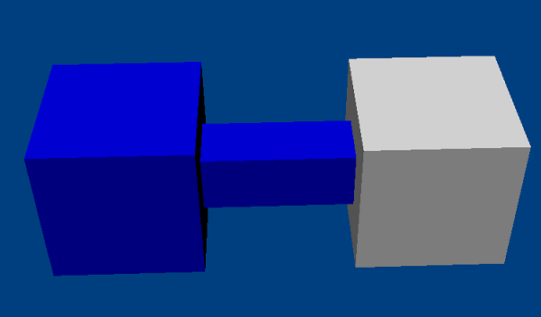

The fixed joint effectively glues two bodies together with no remaining degrees of freedom for relative motion. It is useful to set it to be breakable (see Breakable Joint) to simulate simple fracture effects.
An example for a fixed joint is a factory chimney divided into sections, each section held together with fixed joints. When the chimney is hit, it will break apart and topple over by sections rather than unrealistically falling over in one piece.
DOFs removed: 6
DOFs remaining: 0
|
Parameter |
Description |
| actor[0] | First actor |
| actor[1] | Second actor |
NxFixedJointDesc fixedDesc;
fixedDesc.actor[0] = actor0;
fixedDesc.actor[1] = actor1;
NxFixedJoint *fixedJoint=(NxFixedJoint*)gScene->createJoint(fixedDesc);